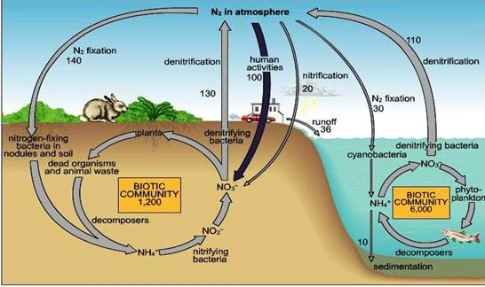
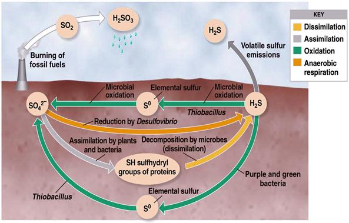

AMBE 101 :: Lecture 17 :: MICROBIAL TRANSFORMATIONS OF NITROGEN, PHOSPHORUS AND SULPHUR

MICROBIAL TRANSFORMATIONS OF NITROGEN
Biological availability of N, P and K is of considerable economic importance, since they are the major plant nutrients derived from the soil. Of the three, N stands out as the most susceptible one to microbial transformations. This element is the key building block of the protein molecule upon which all life is based on, it is an indispensable component of the protoplasm of plants, animals and micro organism.
Molecular N2 constitutes about 78% of the earth’s atmosphere but it is chemically inert and cannot be utilized by more living organism, plant animals and micro organism therefore depend on a source of combined N such as ammonia, nitrate or organic N compounds for their growth.
Nitrogen undergoes a number of transformations that involve organic, inorganic and volatile forms of nitrogen. A small part of the large reservoir of N2 in the atmosphere is converted to organic compounds by certain free living micro organism or by plant microbe association that makes the element available to plant growth. The nitrogen present in the proteins or nucleic acids of plant tissue is used by animals. In the animal body, the N is converted to other simple and complex compounds. Upon the death, plants and animals undergo microbial decay and organic N is released as ammonium, which is then utilized by vegetation or is oxidized to nitrate by microorganisms. The nitrate from of N is mostly used by the plants or may be lost by bacteria reduced to gaseous N2, which escapes to atmosphere, there by completing the cycle. The Nitrogen cycle mainly includes transformations such as
- Nitrogen mineralization : In which N containing organic complexes are decomposed and converted into inorganic compounds for use by plants
- N immobilization : In which N containing inorganic compounds are assimilated
N2 is acted on by certain micro organism sometimes in symbiosis with a higher plant, which can use it is as a N source for growth. The process of nitrogen fixation, results in the accumulation of new organic compounds in the cells of responsible micro organisms. The N2 thus fixed reenters general circulation when the newly formed cells are inturn mineralized.
By means of these reactions the subterranean microflora regulates the supply and governs the availability and chemical nature of N in soil.
NitrogenCycle

A - |
Ammonium |
E - |
Immobilization |
B - |
Mineralization |
F - |
Denitrification |
C - |
Nitrification |
G - |
N2 Fixation (Non-symbiotic) |
D - |
Nitrate reduction |
H - |
N2 fixation (Symbiotic ) |
I. Nitrogen mineralization
The conversion of organic N to the more mobile, inorganic state is known as nitrogen mineralization. As a consequence of mineralization, ammonium and nitrate are generated and organic N disappears. This takes place in two distinct microbiological steps.
1. Ammonification
It is the process of mineralization in which proteins, nucleic acids and other organic components are degraded by micro organism with the eventual liberation of ammonia. This is called ammonification. A part of the liberated ammonia is assimilated by the micro organism themselves. The first step in ammonication process is the hydrolysis of proteins, nucleic acids and other organic nitrogenous compounds into amino acids (proteolysis). The amino compounds are then deaminated to yield ammonia. Ammonification usually occurs under aerobic conditions while under anerobic conditions protein decomposition leads to conversion of ammonia into amines and related compounds (eg) clostridium. The anaerobic decomposition of protein called as putrefaction. These amines are subsequently oxidized in the presence of O2 to release ammonia.
Break down of nitrogenous substance is brought about by the activity of a multitude of microbial species.
Almost all bacteria, actinomycetes and fungi can bring about proteolysis and the amino acids produced are utilized for the growth of these organisms.
(2) Nitrification
The biological oxidation of ammonium salts (in soil) to nitrites and the subsequent oxidation of nitrites to nitrates is called as nitrification. i.e. the biological convention of N in soil from a reduced to a more oxidized state, called nitrification.
Nitrification occurs in two steps;
First ammonia is oxidized to nitrite.
2 NH3 + 1½ H2O2 → NO2- + 2H+H2O-Nitrosofication
This change is brought about by chemoautotrophic bacteria of the genera Nitrosomonas, Nitrosolobus, Nitrosococus, Nitrosospira. These bacteria obtain their energy requirement by the oxidation of NH4+ to NO-2. Among the nitrifiers Nitrosomonas are most important in soils.
Some heteotrophs involved
Streptomyces, Nocardia
Second step
Nitrite is further oxidized to nitrate
HNO2 + ½ O2 → HNO3.
Organisms: Nitrobacter, Aspergillus, Penicillium, Cephalosporium.
Factors influencing the growth of nitrifying bacteria in soil
Levels of ammonia and nitrite, aeration, moisture, temperature, pH and organic matter. In acid soils – nitrification is poor. Waterlogged soils – deficient in O2 – not congenial for nitrification.
3. Denitrification
The convention of nitrate and nitrite into molecular N2 or nitrous oxide through microbial processes is known as denitrification. Certain bacteria are capable of using nitrate as the terminal electron acceptor under anaerobic conditions. This is called nitrate respiration. As a consequence of nitrate respiration, NO3 is reduced to N2 gas or nitrous oxide. Denitirifcation leads to the loss of N from the soil. It depletes N, and therefore it is not a desirable reaction.
The escape of molecular N into the atmosphere is also known as volatalization.
Denitirfication occur mostly in waterlogged anaerobic soils with a high organic matter contents. Denitrification of bound nitrogen to gaseous N is mediated by numerous species of bacteria, which normally use O2 as hydrogen acceptor (aerobically) and, also use nitrates and nitrites (anerobically).
Anaerbic convertion of nitrate into molecular nitrogen is known as nitrate respiration.
Bacterial genera which bring about denitirfication Pseudomonas, Achromobacter, Bacillus, Micrococcus
2NO-3 +10 H → N2 + 4H2O+ 2OH- (or)
2NO-2 +6 H → N2 +2H2O +2OH- (or)
N2O + 2H → N2 + H2O
Since nitrates are used as a source of electron acceptor, there is a net loss of N from soil. This process is termed also as dissimilatory nitrate reduction. Many soil bacteria like.
Thiobacillus denitrificans
Oxidize S (chemoautotrophically) and also reduce nitrate to nitrogen
5S + 6 KNO3 + 2 H2O → 3N2 + K2SO4 + 4KHSO4 (or)
5 K2S2O3 + 8 KNO3 + H2O → 4N2 + 9 K2SO4 + H2SO4
General pathway of denitrification
Nitrate is first reduced to nitrite, which is then transformed to nitrous oxide (NO). The nitrous oxide is converted to N2 with N2O as an intermediate.
1 2 3 4
2 HNO3 → 2HNO2 → 2 NO → N2O → N2
The enzymes involved
1. Nitrate reductase 3. Nitric oxide reductase
2. Nitrite reductase 4. Nitrous oxide reductase
- Fallow soils flooded with water are more congenial for denitrification than well drained and continuously cropped soils.
- Though it is a undesirable reaction in point of view of plant nutrition, but have ecological importance. Because with out denitrification the supply of N on the earth world have got depleted and NO3 would have accumulated.
- High concentration of NO3 are toxic, denitrification is a mechanism by which some of the N is released back to the atmosphere.
5. Nitrate reduction
The reverse of nitrification process. That is the reduction of nitrate to nitrite and then ammonia. Since organisms are able to obtain cellular Nth ammonia assimilation, the process is called as assimilatory nitrate reduction.
HNO3 + 4H2 → NH3 + 3H2O
II. Nitrogen immobilization
The process of microbial assimilation of inorganic nitrogen is referred as immobilization. In contrast to mineralization, microbial immobilization leads to the biosynthesis of the complex molecules of microbial protoplasm from ammonium and nitrate. Immobilization results in a marked depression of nitrogen uptake by the plant.
The mineralization of organic N and the microbial assimilation of inorganic ions proceeds simultaneously.Both mineralization and immobilization take place regardless of the % of N in the organic N in organic matter. On the death of micro organism, the immobilized N is however released through mineralization. It is also a loss of nitrogen. NO3 when accumulated in microbial protoplasm it is referred as assimilatory NO3 reduction.
MICROBIAL TRANSFORMATION OF PHOSPHORUS AND SULPHUR
I. Phosphorus cycle (Video)
Phosphorus is only second to N2 as an inorganic nutrient required by both plants and micro organisms. Phosphate constitutes nearly 0.1% of the earth’s crust. They occur in soil in inorganic and organic forms.
The inorganic forms are derived from parent rocks or through fertilizers application and manuring with bone meal. They are soluble in water when present as phosphates of Na, K, Ca, Mg etc.
The organic phosphorus containing compounds are derived from plants and micro organisms and are composed of nucleic acids, phospholipids, lecittin, phytin and related compounds.
- Phosphorus in phytin, phospholipids and nucleic acids is found as phosphates
- Phytin is the calcium – magnesium salt of phytic acid
- Phospholipids are compounds in which phosphate is combined with a lipid, contained 10% of cell phosphorus.
- Inorganic polyphosphates are quite abundant in certain fungi
- In soil, from15-85% of the total P is organic. Soils rich in organic matter contain abundant organic P.
- Ratios of organic C to P of 100 to 300:1 N: organic P = 5 to 20: 1
In cultivated soil P present in abundant about 1100 kg/ha but most of them as not available to plants; only about 1% of the total P is in available form.
PO43- in rocks and in cells
- Acid from Thiobacillus
Microorganisms bring about a number of transformations of the element.
- Altering the solubility of inorganic compounds of P
- Mineralization of organic compounds with the release of inorganic phosphate
- Converting the inorganic, available anion into cell components, an immobilization process (analogous to that occurring with N)
- Bringing about an oxidation or reduction of inorganic P compounds
Particularly, important to P cycle are the microbial mineralization and immobilization reactions.
(1) Solubilization of inorganic phosphorus
Insoluble inorganic compounds of P are largely unavailable to plants, but many micro organisms can bring the PO4 into solution. P solubilizing are 105 to 107 / g soil.
Eg: Pseudomonas striata, Microoccus Bacillus sp., Fusarium, pergillus sp, Solubilises calcium salts, iron, aluminum, magnesium manganese phosphate.
- P is solubilized by the production of organic acids. The acids convert Ca3 (PO4)2 to di and monobasic phosphates and releases P to plants.
- Solubilization of phosphates by plant roots & micro organism is dependent on soil pH. In neutrals and alkaline soils having a content of calcium, precipitation of CaPO4 takes place. Micro organism and plant root readily dissolve such PO4 and make them available to plants.
- On contrary, acid soils are generally poor in Ca ions and phosphates and precipitated in the form of ferric or aluminum compounds which are not soluble. There, it is solubilized by the addition of PO4 solublizing micro organism.
- Phosphorus exists mainly as apatides, with the basic formula M10 (PO4)6 X2. Commonly the mineral (M) is Ca, less often Al or Fe. The anion (X) is either F- or Cl- or OH- or CO2-3. Diverse combinations of M and X results in 200 forms of P.
(2) Mineralization of organic phosphorus
Organic form of P is the larger reservoir of P in soil. By the action of bacteria, fungi and actinomycetes, bound element in remains of the vegetation and in soil organic matter is made available to succeeding generations of plants.
Among the organic phosphours compounds, lecithin, nucleic acids and phytin occupy a prominent place. Lecithin contains 9.39 % P2O5, 1.6% N and 65.36% C.
It is a process of convention of organic forms of phosphorus into inorganic available forms of P a highly significant correlation is observed between the rates of N and P convention to inorganic forms.
- Mineralization is favoured by warm temperature, with the thermophilic range being more favourable than mesophilic range.
- Neutral pH increases PO4 release, which favours microbial metabolism
- Quantity of substrate ie presence of organic P. If more P, more of mineralization
- Mineralization is mediated by the enzymes called phosphatases. These enzymes cleave phosphorus from more frequently encountered organic substrates.
- Phytases liberates PO4 from phytic acid or its Ca-Mg, Salt, Phytin. They remove PO4-s, one at a time, yield penta – tetra, di- and mono PO4 and then finally free inositol.
- Bacillus, Pseudomonas, Aspergillus, Penicillium, Rhizopus can synthesize this enzyme. Mycorrhizal (fungi) are also able to mineralize the organic forms of P and increases P uptake by the plants.
(3) Immobilization
Process of assimilation of P into microbial nucleic acids, phospholipids or other protoplasmic substances is called immobilization. It leads to the accumulation of non utilizable forms of the element.
P accounts for 0.5-1.0% of fungus mycelium and 1.0 to 3.0% of the dry weight of the bacteria and actinomycetes.
(4) Oxidation reduction reactions
Biological oxidation of reduced phosphorus compounds into oxidized state.
Phosphite (HPO3=) is oxidized to phosphate. A number of hetertrophic (bacteria), (fungi) & (actinomycetes) utilize phosphite as sole P source. Hypophosphites (HPO2=) can also be oxidized to phosphate by heterotrophs.
HPO3= → HPO4=
HPO2= → HPO4=
Reductive process, reductive pathway has also been functioned. PO4 is reduced to phosphite and hypophosphite.
H3PO4 → H3PO3 → H3PO2
Clostridium butyricum, E. coli form phosphite and hypophosphite from orthophosphate. It is biochemically analogue to the process of denitirification. Only little information is available about this process.
P exist in an organic form in the protoplasm on the death of living organism, this (P) is changed to inorganic phosphoric acid. This is soon converted into insoluble salts of Ca, Fe, Mg and Al. Phosphorus thus alternates between organic and inorganic, and soluble and insoluble forms. In soluble P is solubilized by various acids produced by micro organism.
Microbial activities involved in the cycling of C, N and P are absolutely essential for maintenance of soil fertility.
II. Sulphur cycle
Sulphur like N, is an essential element for all living systems because of it’s inert nature, is not utilized by plants. To be used first S has to to be oxidized or reduced. In soil, it occurs both organic (S containing amino acids, vitamins ) as well as inorganic forms (Sulphur, sulphates etc., ) .
Four distinct transformations are recognized
- Decomposition/Mineralization of larger organic S compounds to smaller units and their conversion into inorganic compounds
- Microbial associated immobilization
- Oxidation of inorganic ions and compounds such as sulphides,thiosulphates, Sulphu
- Reduction of Sulphates abd other sulphides

Mineralization
Conversion of organic bound S into inorganic state, mediated through M.O. The released S in either absorbed by plants or escaped into atmosphere in the form of oxides
Oxidation
- Occurs both in aerobic and anaerobic condition
- Bacteria
- Nonfilamentous forms- Thiobacillus
- Filamentous forms – Beggiatoa,Thiothrix and Thioloca
- Fungi and actinomycets
- Aspergillus, Penecillium and Microsporium
Importance of Thiobacillus
- Produces Sulphuric acid ,lower down the soil pH – Hence used in controlling plant disease
- Apple and Potato scab –Streptomyces scabis ,Sweet potato rot – S. ipomea
- S+ Thiobacillus application is used for the control
- Remediation of alkali soil
- Increases the solubilization of other nutrients (P,K,Ca,Mn,Al and Mg )
- Preparation of biosuper- Rock phosphate + T.thiooxidans and S--- Australia
- Lipman’s process- Compost preparation
- Soil + manure + elemental S + rock phosphate
Sulphate reduction
Reduces inorganic sulphate into Hydrogen sulphide –reduces the availability of S for plant nutrition
- Desulphovibrio desulphricans -anaerobe
| Download this lecture as PDF here |